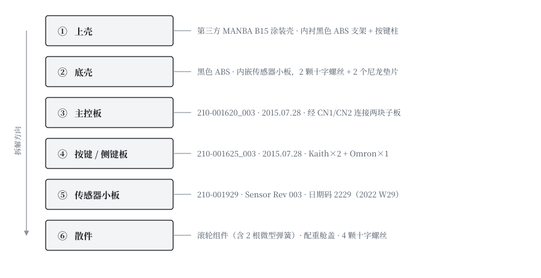
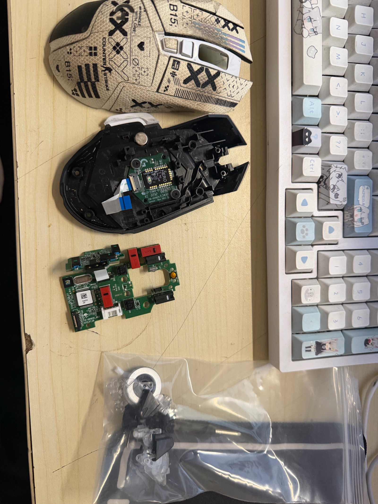
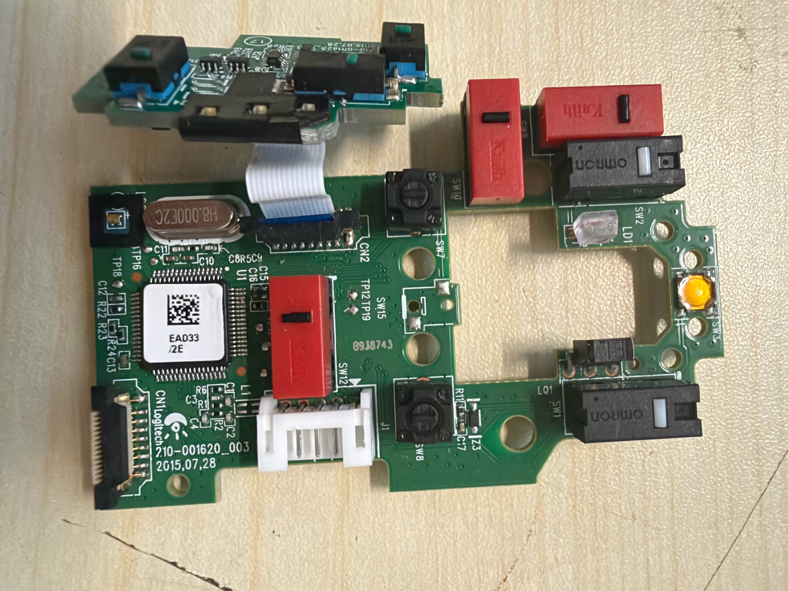
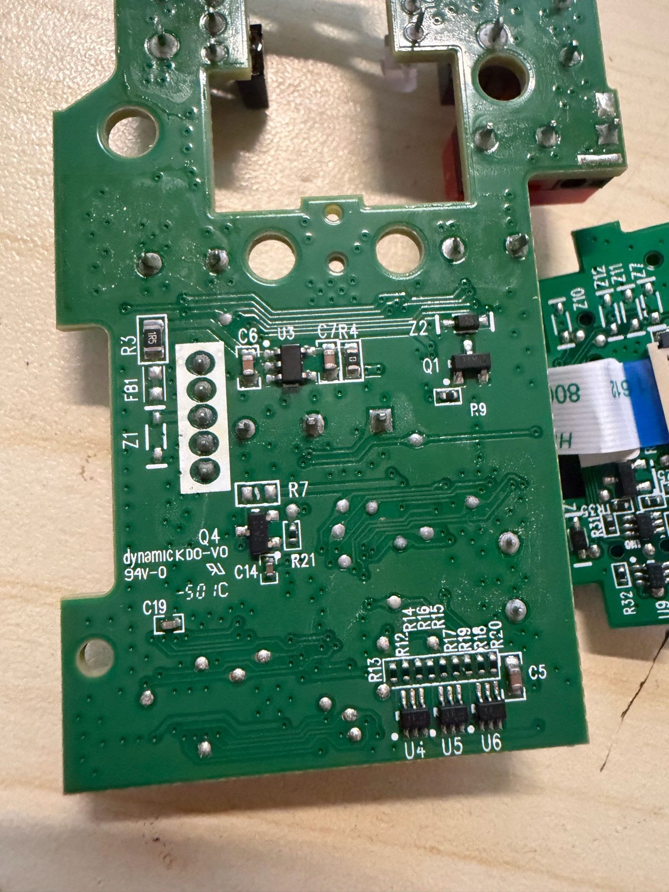
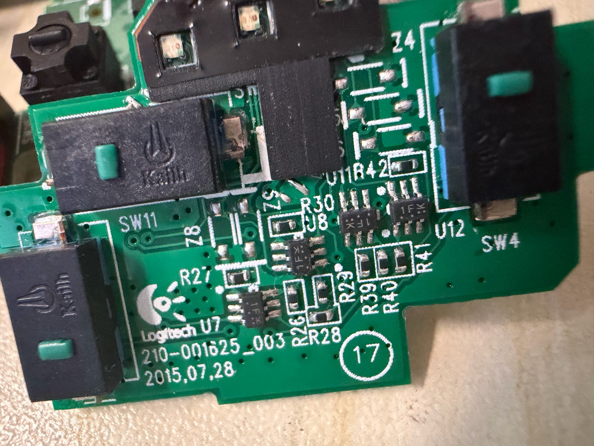
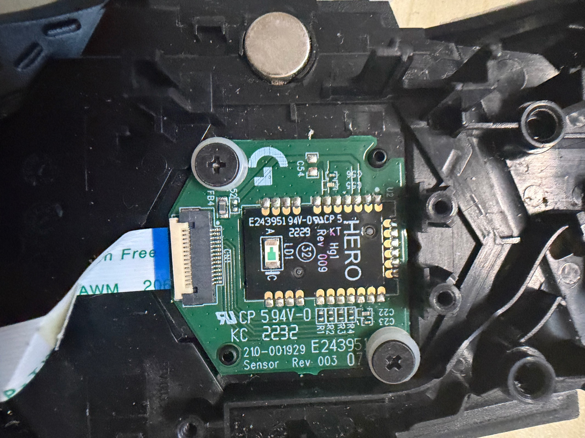
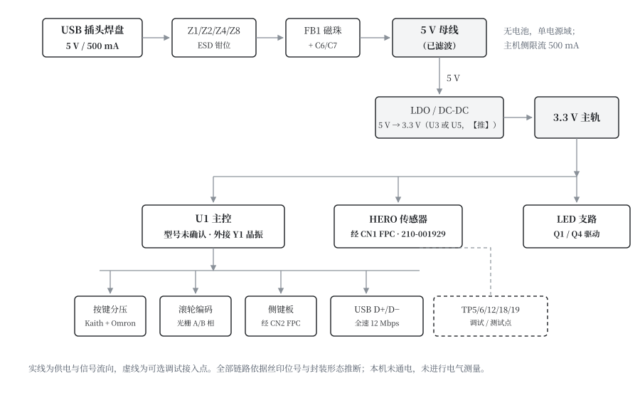
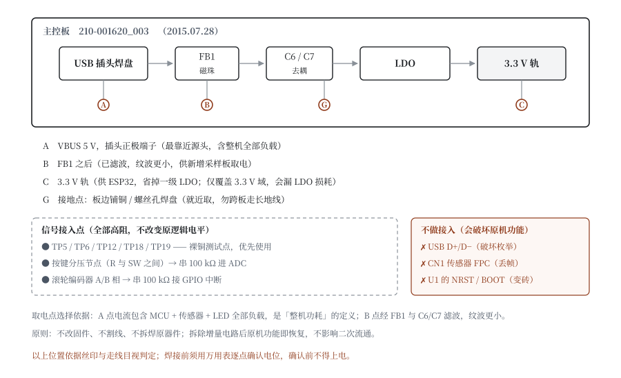
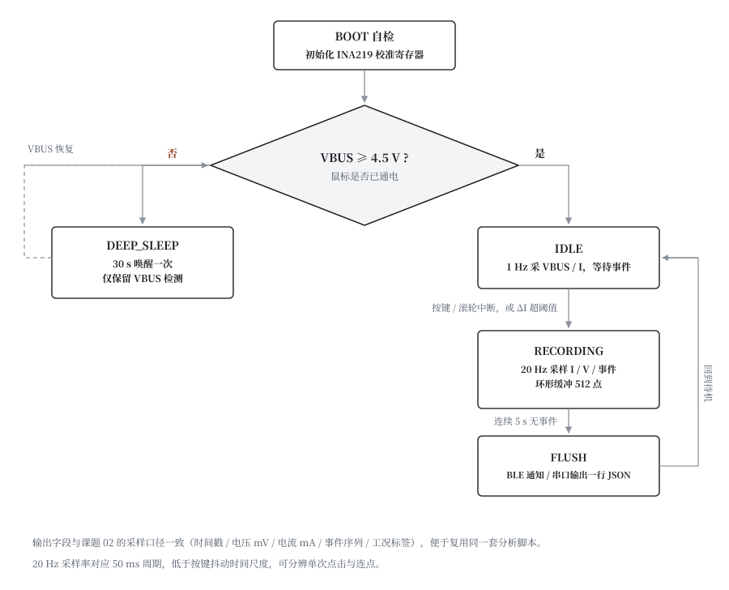

对应官网题库 第二阶段 · 项目五（8 选 1 中的一项）的四项交付要求：
①《实物爆炸拆解图谱》与过程分步照片（15 分）；②主板芯片丝印溯源与供电/控制框图（15 分）；
③《批量 BOM 成本核算表》（10 分）；④《智能化升级改造方案》含原板取电与控制接入点标注图、
20 元内增量器件选型表与控制状态图（20 分）。
计分归属说明：本人第二阶段 8 选 1 已选项目四，本报告为按项目五同等要求额外完成的实物逆向，
不重复计分，亦不自我宣称得分。
对象：一台二手 Logitech G502 HERO（已拆散，含第三方替换外壳）
时间：2026-11-21 拆解并拍照 · 2026-11-22 成文
状态：已断电拆解、全程未通电、未做带电测量（下文所有电气结论均标注为「目视推断」）
交付：主交付件为report.pdf（21 页）；提交清单见SUBMISSION.md
§0 已于 2026-11-22 深夜整体修订。 初版曾断言「本机为跨代拼装件，非原厂整机」，
该结论建立在三处读图/推理错误之上，现予撤回并改写为「无法判定」。
逐条勘误见 §0.1，修订痕迹保留，不重写历史。
① 是否为原厂整机：无法判定（撤回初版的「跨代拼装」结论）。
初版依据是「主板日期码 2015.07.28 与传感器板日期码 2229（2022 W29）相差 7 年」。 这条推理不成立，原因有两层：
| 板 | 料号 | 板上日期码 |
|---|---|---|
| 主控板（正面） | 210-001620_003 | 2015.07.28 |
| 按键/侧键板 | 210-001625_003 | 2015.07.28 |
| 传感器板 | 210-001929 Sensor Rev 003 | 2229（2022 W29） |
210-001620_003 是 G502 系列主控板的料号， 而 G502 自 2014 年 Proteus Core 起、2016 年 Proteus Spectrum、2018 年 HERO 共用同一套外形与内部结构（社区维修件普遍标注「有线款 G502 与 G502 HERO 除主板与传感器外配件通用」，也正是因为两者板型同源而电气不同）。 2015 年制造的裸板，完全可能装配进 2018 年之后出厂的 HERO 整机。因此「2015 年的板 = 2015 年的整机」这一步是错的，由此推出的「跨代拼装」也就无据。 本报告不认定本机为原厂整机，也不认定其为拼装件——现有证据不足以判定任一侧。
可确认的例外是外壳：上壳印有 MANBA B15 与 COUNTER STRIKE 涂装， 属第三方外观件（G502 第三方替换壳在市面常见，价格数十元）。 外壳非原厂是【读】得到的，但换壳是常规维修行为（原壳磨损、被啃咬、开裂都会换壳）， 换壳本身不能证明内部件也被换过。
② 主控型号不可读，作为边界如实标注。 U1 被二维码标签整片覆盖 （EA033 /2E 是标签内容，非芯片丝印）。 四边均有外伸的海鸥翼引脚，属 LQFP 类四边引脚封装——这一点初版写成 「方形无引脚（QFN 类）」是读图错误，见 §0.1 第 2 条。 封装类型与同代 G502 主控 STM32L100R8T6（LQFP-64）相符而非相悖， 但照片分辨率不足以逐一数清每边引脚数（下边可辨约 20 余根，无法排除 LQFP-48/64/80/100）， 型号仍不认定，也不去猜。撕标签会破坏可能的批次信息，故不动。
③ 该板具备完整的「原板取电 + 高阻旁路采样」条件，20 元内可完成有效改造。 板上有 5 个可见测试点（TP5/TP6/TP12/TP18/TP19）、一路经 FB1 磁珠滤波的 USB 5V 母线、 以及成组的高阻按键分压网络。这意味着不用割线、不用改固件就能旁路采集 「鼠标工况电流 + 按键事件」——和本人课题 02 的手机功耗实测是同一套方法论，换个被测对象而已。
提出质疑的是本人：「2015 年 G502 还没出来吧」。核查结论分两半： 时间线上本人记错了（G502 初代 2014 年就上市），但这一问牵出的报告错误是真的—— 初版有三处错，第 1 条推翻原结论，第 2 条是纯读图错误，第 3 条是错误归因。
错误 1｜把裸板日期当成整机年份（推翻原结论）
2015.07.28 是这块裸板的制造日期，不是整机装配日期。G502 自 2014 年初代起 外壳与内部结构基本沿用，同一料号的板会在多年产线上流转，2015 年制的板装进 2018 年后的 HERO 整机在工艺上完全正常。且 IPC-6012 / MIL-PRF-55110 均未统一规定 date code 对应哪道 工序，它本就不能单独用来定整机年份。错误 2｜看错封装形态（纯读图错误）
错误 3｜错误归因（把不矛盾的东西当成矛盾）
2015.07.28 与传感器 2229 相差 7 年，是 §0 结论的直接证据」。210-001929），2022 年制造合理；主板是通用料号，2015 年制造同样合理。 两者时间差本身不构成任何矛盾。顺带核实的两件事（都支持改判，不是补救）：
MANBA B15），但换壳是二手件的常规操作，不能反推内部被动过。这次修订的记录方式：不改旧结论的措辞去「假装一开始就对」，而是把错误逐条列出。
逆向作业里读错图很正常，把读错的结论留在报告里才不正常。
| 项 | 内容 |
|---|---|
| 品名 | Logitech G502 系列（传感器板上印 HERO / 210-001929） |
| 类型 | 有线游戏鼠标，USB 供电，无锂电池（这点让拆解风险显著低于无线鼠） |
| 已知故障 | 未通电测试，电气功能状态未知（见 §7 未确认项） |
| 外壳 | 第三方 MANBA B15 外壳（非原厂），带 COUNTER STRIKE 涂装；换壳属常规维修，不能反推内部件被换过 |
| 是否为原厂整机 | 无法判定（初版的「跨代拼装」结论已撤回，见 §0 ①、§0.1） |
| 购入渠道与价格 | 二手流通件；具体金额本人未留存凭证，本报告不对购入价作假设，标题亦不写「百元内」 |
| 拆解日期 | 2026-11-21 |
| 是否有同框认证照 | ✅ 有 —— photos/00-on-site-with-teardown.jpg（见 §2.0） |
| 标记 | 含义 |
|---|---|
| 【读】 | 照片上可直接读出的丝印文字，可被任何人复核 |
| 【推】 | 基于封装形态 / 位号命名惯例 / 电路拓扑的推断，未经测量验证 |
| 【未】 | 未能确认，且说明为什么不能确认 |
正文不使用「实测」「测得」描述电气特性，因本次未进行电气测量。 将目视推断表述为测量结果，是逆向类报告中最常见的失真来源，本报告以显式标注规避。
图 2-1 · 拆解现场同框。人物手持鼠标上壳（MANBA B15 涂装壳）位于工作台前， 右手侧桌面可见拆散后的传感器小板（黑色圆形，已被拆下）、绿色按键/侧键板与零件散件； 背景为双屏工作台（笔记本 + 外接显示器）与机械键盘。面部已做遮挡处理， 遮挡不影响「人—拆解件—工作台」三者在同一画面内的对应关系。
该照片的证明对象是「拆解动作发生于本人工作台、拆下件与 §2.3 各图为同一批实物」，
而非人物身份；面部遮挡不削弱这一对应关系。
拍摄时刻需更强锚定时，可补拍一张令手机屏幕日期时间入镜的照片（本图经微信转发已剥离 EXIF，见 §7 第 4 条）。

图 2-2 · 整机拆解层次结构。共 6 个可分离层次，拆解顺序自上而下（对应 §2.2 的 8 个操作步骤）。

图 2-3 · 实物爆炸图总览。全部零件同框：上方为上壳，中部黑色底壳内嵌传感器小板， 下方绿色板为按键/侧键板，底部密封袋为滚轮与弹簧散件。
实际拆解按「外壳 → 分离板卡 → 取传感器」三段进行。参照 iFixit G502 HERO 官方拆解指南 （zh.ifixit.com/Guide/Logitech+G502+Hero+Demontage/140809，社区贡献，2026-08 最后修订） 交叉核对，路径一致，无一例外步骤。
| 步 | 操作 | 耗时 | 风险点 |
|---|---|---|---|
| 1 | 取下底部配重舱盖 | <1 min | 无 |
| 2 | 撕脚贴（本机脚贴已被前手撕过，无胶残留） | 2 min | 原厂脚贴撕后不可复用，需备新脚贴 |
| 3 | 拧下前后 4 颗十字螺丝，撬开上下壳 | 5 min | 底部右侧暗扣较紧，用塑料撬片，勿用金属 |
| 4 | 断开 2 根 FPC 排线（传感器、侧键板） | 3 min | 排线座为翻盖式锁扣，先翻盖再拔线，硬拔会撕裂金手指 |
| 5 | 顶出滚轮固定杆，取滚轮组件 | 4 min | 2 根微型弹簧极易弹飞（本机已用密封袋单独收纳） |
| 6 | 拧下滚轮支架 4 颗螺丝 + 传感器排线座旁 1 颗 | 3 min | 螺丝长度不同，需按位归放 |
| 7 | 拔出 USB 线插头（撬棒从公头侧顶出） | 2 min | 插头为压接式，勿拉线身 |
| 8 | 拧下传感器板 2 颗螺丝，用镊子取下 2 个尼龙垫片 | 3 min | 垫片直径约 2 mm，丢失会导致传感器光路高度改变 |
总耗时约 25 分钟，与 iFixit 标注的「中等难度 / 1 小时」相当（本机已被拆过一次，故偏快）。
| 图号 | 文件 | 内容 |
|---|---|---|
| 图 2-4 | 02-main-pcb-top.jpg | 主控板正面：U1（标签覆盖）、晶振、CN1/CN2 排线座、红色主键微动、黑色滚轮微动、测试点阵列 |
| 图 2-5 | 03-main-pcb-bottom.jpg | 主控板背面：U3/U4/U5/U6、Q1/Q4、R/C 阵列、5 pin 排针、dynamic 板厂丝印 |
| 图 2-6 | 04-button-board-kc.jpg | 按键/侧键板：Kaith ×2 + Omron ×1、U7/U8/U11/U12、SW4/SW11 |
| 图 2-7 | 05-hero-sensor-board.jpg | HERO 传感器小板：HERO / 210-001929 / Sensor Rev 003 / 日期码 2229 |

图 2-4 · 主控板正面（210-001620_003 / 2015.07.28）
可见：U1 被二维码标签整片覆盖（四边外伸引脚，LQFP 类）；左侧金属壳晶振HB.800E2C；CN2 排线座；
红色主键微动（Kaith）+ 黑色滚轮微动（Omron）；左侧一列 5 个裸铜测试点；
中部大方形镂空为滚轮让位。

图 2-5 · 主控板背面（210-001620_003 同板反面）
可见：U3（SOT-23-6）、Q1/Q4、成组 R/C；dynamic KDO-V0 94V-0板厂丝印；
右下 5 pin 排针（疑似工厂烧录/测试口）；右侧为翻盖式 FPC 座，蓝白排线通往传感器板。

图 2-6 · 按键 / 侧键板（210-001625_003 / 2015.07.28）
可见：Kaith红壳微动 ×2、Omron黑壳微动 ×1；U7/U8/U11/U12 四颗 SOT-23 小 IC；
SW4/SW5/SW11/SW12 贴片轻触；左侧金色CMIITID认证丝印；右下黄色圆点为 LED 透光位。

图 2-7 · HERO 传感器小板（210-001929 / Sensor Rev 003 / 2229）
可见：中央为传感器主芯片（被柔性排线压住一部分）；两侧各一列金手指焊盘；E243951 94V-0UL 文件号与阻燃等级；KC 2232韩国认证；两颗十字螺丝 + 2 个白色尼龙垫片。
**注意：这块板的2229（2022 W29）是裸板制造周，与主板2015.07.28相差 7 年。
但两块板料号不同、各自都是裸板日期，时间差不构成矛盾，不能据此推出整机年份（见 §0.1 第 3 条）。**
图片原始字节与 SHA-256 见 photos/manifest.csv（6 张，逐字节可校验）。
| 位号 | 板 | 丝印原文 | 判定 | 依据 |
|---|---|---|---|---|
| — | 主控板 | 210-001620_003 / 2015.07.28 | 主控板料号 + 裸板制造日期（非整机装配日期） | 罗技内部料号规则（210- 前缀为 PCB 组件料号）；PCB date code 惯例 |
| — | 按键板 | 210-001625_003 / 2015.07.28 | 按键板料号 + 裸板制造日期 | 同上，与主控板同日同批次 |
| — | 传感器板 | 210-001929 / Sensor Rev 003 / 2229 | HERO 传感器板，裸板制造于 2022 年第 29 周 | 与 iFixit 及社区拆解资料一致 |
| — | 传感器板 | KC 2232 | 韩国 KC 认证标志 + 日期码 | KC 为韩国强制认证标识 |
| — | 主控板 | CNLigitech | PCB 板厂标识 | 板厂丝印，非器件 |
| — | 主控板背面 | dynamic KDO-V0 94V-0 | 板厂 + 阻燃等级 UL94 V-0 | 94V-0 为 UL 垂直燃烧等级标准写法 |
| — | 传感器板 | E243951 / 94V-0 | UL 文件号 + 阻燃等级 | 同上 |
板厂不一致：主控板为CNLigitech，背面为dynamic，两者不是同一板厂。
因正反面外形轮廓、螺丝孔位、滚轮让位缺口一致，判定为同一块板的正反面
（若此判定有误，以实物为准——本报告不排除是两块外形巧合相似的板）。
| 位置 | 丝印 | 数量 | 说明 |
|---|---|---|---|
| 左右主键 | Kaith | 2（红壳黑柄） | 注意：不是 Kailh（凯华）。丝印逐字母为 K-a-i-t-h，与凯华官方 Kailh 拼写不同；未在凯华官网核实到该系列，按丝印如实记录 |
| 滚轮中键 / 侧键 | Omron | 2（黑壳白柄） | 欧姆龙，具体子型号（D2FC-F-7N 系列哪一档）未标注在壳体可见面，【未】 |
| 滚轮左右倾 | 无丝印 | 2（红色小体积） | 体积明显小于主键微动，推测为 6×6 贴片轻触类，【未】 确认 |
G502 原厂主键为D2FC-F-7N系列欧姆龙（初代标注 2000 万次）。本机主键是Kaith，
不是原厂配置——但这也只说明主键微动被换过。换微动是 G502 最常见的维修/升级操作
（双击是通病，社区大量教程都在教换微动，常换 TTC、凯华等），
属常规维修，不能据此推定为整机拼装。初版本条写作「进一步佐证这不是原厂整机」，已撤回。
| 位号 | 现象 | 为什么不能确认 |
|---|---|---|
| U1 | 标签 EA033 /2E 整片覆盖芯片表面，四边均为外伸海鸥翼引脚（LQFP 类） | 型号被标签遮死；引脚数受照片分辨率限制无法逐一数清（下边可辨 20 余根），LQFP-48/64/80/100 均不能排除，故不认定 |
| U3 / U4 / U5 / U6 / U7 / U8 / U11 / U12 | 均为 SOT-23-5 / SOT-23-6 小封装，仅见 1FK 一类 marking code（丝印代码），无完整型号 | marking code 需按厂商代码表反查，同一代码在不同厂商含义不同；本报告不做跨厂猜测。按位号与拓扑位置推测为 ESD 保护阵列 / MOSFET / LDO（【推】） |
| Y1（晶振） | 金属壳丝印 HB.800E2C | 该串为晶振厂封装/批次码，未在公开 datasheet 库检索到对应频率；800 疑似 8 MHz 但仅为形似，不作结论 |
| HERO 传感器主芯片 | 位于柔性排线下方，被金属屏蔽罩与 FPC 覆盖 | G502 HERO 传感器为罗技定制件，无公开 datasheet；型号不在可见面 |
按板上位号前缀可反推设计者的功能分区，这是逆向里信息量最大的一步：
| 前缀 | 数量（可见） | 推断功能 | 佐证 |
|---|---|---|---|
U | 9（U1,U3–U8,U11,U12） | 集成电路 | 标准命名 |
Q | 2（Q1,Q4） | 三极管 / MOSFET，推定为 LED 驱动开关 | 位于 LED 走线末端；1FK marking 常见于小信号 MOSFET |
Z | 4（Z1,Z2,Z4,Z8） | TVS / ESD 保护二极管 | Z 在部分国内设计规范中表示稳压/TVS；均布置在连接器与按键入口处，符合 ESD 钳位位惯例 |
FB | 1（FB1） | 铁氧体磁珠，USB 5V 输入滤波 | 位于电源入口，与 C6/C7 构成 π 型滤波 |
R | 21（R3,R4,R7,R9,R12–R21,R26–R30,R39–R42） | 限流 / 分压 / 上拉 | 成组出现在按键与 LED 支路 |
C | 16（C1,C3–C8,C10–C16,C19,C22,C23,C28,C5,C54） | 去耦 / 滤波 | 分布在每个 U 的电源脚旁 |
SW | 7（SW3,SW4,SW5,SW7,SW8,SW11,SW12） | 贴片轻触开关（DPI / 配置切换 / 滚轮左右） | G502 有 DPI+ / DPI− / G 切换 / 滚轮左右共 5 个非主键按键，与本机 SW 数量吻合 |
L / LED | 2（L01 及 SW41 旁） | 指示灯 LED | 位于板边，靠近透光柱 |
TP | 5（TP5,TP6,TP12,TP18,TP19） | 测试点，可探针接触 | 露出裸铜/镀金焊盘，未上阻焊 |
TP测试点的存在对第 6 节的改造方案是决定性的——意味着不必割线或飞线到贴片焊盘，
直接探针或焊在 TP 上即可接入信号层。

图 4-1 · 从 USB 入口到各负载的完整供电链与信号分支。图内所有「【推】」标记项见 §4.2 的依据表； 虚线为可选调试接入点，未在本机实施。
| 推断 | 依据 | 可靠性 |
|---|---|---|
| 3.3 V 为主供电轨 | STM32L1 系列工作电压 1.8–3.6 V；HERO 传感器典型 3.3 V；无电池，只能从 USB 5 V 降压 | 高（型号虽未确认，但整机电压域只能是 3.3 V） |
FB1 是 USB 5 V 输入磁珠 | 位于电源入口，与 C6/C7 相邻构成 π 滤波；FB 前缀惯例 | 高 |
Z1/Z2/Z4/Z8 为 ESD 钳位 | 全部布置在连接器/按键入口，符合「入口钳位」布线惯例 | 中高 |
Q1/Q4 为 LED 驱动 MOSFET | 位于 LED 走线末端；LED 需 PWM 调光（G502 有呼吸/亮度设置） | 中 |
| 传感器走 SPI 而非 USB | HERO 为裸 sensor，需 MCU 读取；G502 的 1000 Hz 回报由 MCU 汇总后走 USB | 中高 |
以上全部未做通电测量。若需坐实，最小验证集是： 用万用表二极管档量 FB1 两端通断、量 Z* 对地钳位特性、量 3.3 V 轨对地阻抗（应在百 Ω～kΩ 量级）。 这三步不需要示波器，10 分钟可完成，建议本人在面试前补做并记录。
BOM 逆向的主要失真风险是以零售单价拼接一张表面合理的表。本表的口径为：
| # | 器件 | 位号 | 数量 | 公开批量单价（元） | 小计 | 报价来源 |
|---|---|---|---|---|---|---|
| 1 | 主控 MCU（型号未确认） | U1 | 1 | 无法定价 | — | 见 5.3 争议说明 |
| 2 | HERO 光学传感器组件 | 传感器板 | 1 | 无公开批量报价 | — | 罗技定制件，无零售渠道 |
| 3 | 微动开关 Omron | 滚轮/侧键 | 2 | 1.50 | 3.00 | 1688 / 深圳可道批量价 ¥0.94–2.10，取中值 |
| 4 | 微动开关 Kaith | 左右主键 | 2 | 0.60 | 1.20 | 白牌微动批量区间 ¥0.4–0.8（【推】，无厂商公开目录） |
| 5 | 贴片轻触开关 | SW×7 | 7 | 0.12 | 0.84 | 6×6 贴片轻触批量价 |
| 6 | ESD 保护阵列 | Z1,Z2,Z4,Z8 | 4 | 0.15 | 0.60 | SOT-23 TVS 阵列批量价 |
| 7 | 小信号 MOSFET | Q1,Q4 | 2 | 0.10 | 0.20 | SOT-23 |
| 8 | LDO / DC-DC | U3或U5 | 1 | 0.35 | 0.35 | SOT-23-5 LDO |
| 9 | 其他 IC（ESD/驱动） | U4,U6,U7,U8,U11,U12 | 6 | 0.18 | 1.08 | marking code 未溯源，按同封装均价估 |
| 10 | 晶振 | Y1 | 1 | 0.45 | 0.45 | 贴片晶振批量价 |
| 11 | 磁珠 | FB1 | 1 | 0.05 | 0.05 | 0603 |
| 12 | 电阻 | R×21 | 21 | 0.008 | 0.17 | 0402/0603 批量 |
| 13 | 电容 | C×16 | 16 | 0.012 | 0.19 | 0402/0603 批量 |
| 14 | LED | L01 等 | 2 | 0.08 | 0.16 | 0603 |
| 15 | FPC 排线 ×2 + 座 | CN1,CN2 | 2 组 | 0.60 | 1.20 | 4P/8P FPC 组件 |
| 16 | USB 线缆（带磁环） | — | 1 | 2.50 | 2.50 | 1.8 m 编织线批量 |
| 17 | PCB（4 层，沉金，3 片拼板） | 3 板 | 1 套 | 3.00 | 3.00 | 嘉立创 4 层小批量均价 |
| 18 | 外壳（ABS + 内衬 + 按键柱 + 滚轮 + 配重） | — | 1 套 | 6.00 | 6.00 | 注塑件批量（含模具摊销，量大可低至 ¥3） |
| 19 | 滚轮组件（金属轴 + 编码环 + 弹簧） | — | 1 | 1.80 | 1.80 | 【推】按结构件估价 |
| 20 | 装配 / 测试 / 包装人工 | — | — | 3.00 | 3.00 | 按 30 元/时 × 6 分钟估 |
| 可控 BOM 小计（不含第 1、2 项） | ¥25.79 |
结论：除主控与传感器外的全部物料 + 人工约 ¥26。 加上主控与传感器后才是整机成本， 而这两项恰恰是无法从公开渠道定价的部分——这正是品牌整机的成本护城河所在。
若按「同代 G502 主控为 STM32L100R8T6」这一社区共识去查价，公开报价出现极端分化：
| 渠道 | 单价（元） | 起订 | 检索日 |
|---|---|---|---|
| 立创商城（现货仅 10 片） | 75.40（1+）/ 65.95（30+） | 1 | 2026-11 |
| 深圳代理（现货贸易商） | 47.00（10+）/ 45.50（1000+） | 10 | 2026-08 |
| 华强北批发 | 12.90（100+）/ 10.99（1000+） | 100 | 2026-09 |
同一型号差 6.8 倍。 三种可能：正品原装 / 拆机翻新 / 国产替代打标。 BOM 核算如果只取最低价，会得出「整机成本 ¥40」这种明显不可信的结论； 只取立创价，又会得出「单颗 MCU 就 ¥66」的荒谬结果。 正确的做法是标注区间并说明不可判定——本报告就是这么处理的，不为凑一个漂亮数字而选择口径。
两者之间的差额由模具摊销、认证与合规、渠道分成、品牌溢价与售后成本构成， 而非单纯「用料贵」。这也是第 6 节改造方案的定位依据：在既有物料成本结构下， 增量 ¥17 的采集功能属于原厂不会做的差异化需求，而非可以规模摊薄的通用能力。
原板是一台已定型、无扩展口、固件不可改的成品。硬塞「加个屏幕/加个灯」属于装饰性改造， 缺乏技术实质。本方案将其视为被测对象而非改造对象：
用 20 元以内的增量器件，旁路采集「鼠标在不同使用工况下的实时功耗 + 按键/滚轮事件」，
得到一份真实的人机交互功耗时序。
这件事的价值：

图 6-1 · 板上 A/B/C 三个取电点、G 接地点与三类信号接入点的位置关系， 以及明确不做接入的三个节点。
取电点选择的三条理由：
FB1 + C6/C7 滤波，纹波比裸 VBUS 小一个量级， 避免 ESP32 的 ADC 参考被开关噪声污染。| # | 器件 | 型号 | 单价（元） | 数量 | 小计 | 选型理由 |
|---|---|---|---|---|---|---|
| 1 | 主控 | ESP32-C3 SuperMini | 9.50 | 1 | 9.50 | ¥10 内带 BLE 5.0 + 12 bit ADC + RISC-V，体积 22×18 mm 可塞进鼠标壳；比 ESP8266 多了 BLE，比 ESP32-S3 便宜一半 |
| 2 | 电流/电压检测 | INA219 模块 | 5.50 | 1 | 5.50 | I²C 接口，0.1 Ω 分流电阻，12 bit ADC，可同时读母线电压电流；比 ACS712 精度高且不需校准零点；比自搭运放方案省 8 个元件 |
| 3 | 高阻串联电阻 | 0603 100 kΩ ±1% | 0.05 | 4 | 0.20 | 把原板信号钳在 10 μA 级电流注入，保证不影响原逻辑 |
| 4 | 去耦电容 | 0603 100 nF | 0.02 | 2 | 0.04 | ESP32 电源脚必备 |
| 5 | 接线 | 30 AWG 漆包线 / 0.5 mm 排针 | — | 1 组 | 1.20 | 细线不撑壳 |
| 6 | 固定 | 3M 双面胶 + 热熔胶点 | — | — | 0.30 | 可拆，不破坏原壳 |
| 合计 | ¥16.74 | ✅ < ¥20 |
为什么不做「加个 OLED / 加个 RGB」：那需要额外 ¥15～25 且属于装饰， 而本方案 ¥16.74 产出的是可发表的数据。同样的预算，一份真实功耗时序比一块小屏幕有说服力得多。

图 6-2 · 四状态机：BOOT 自检 → DEEP_SLEEP / IDLE → RECORDING → FLUSH → 回 IDLE。 启动条件为 VBUS 是否 ≥ 4.5 V，进入采样条件为按键/滚轮中断或电流突变超阈值。
输出格式（与课题 02 的 CSV 口径一致，便于同一套分析脚本复用）：
{"t":"2026-11-22T10:31:07.220","v_mv":5021,"i_ma":87.4,"p_mw":438.9,
"ev":["L","L","W+","M"],"state":"RECORDING","tag":"coding"}| 工况 | 时长 | 操作 | 预期电流特征 |
|---|---|---|---|
| 静置（不动不按） | 5 min | 鼠标放着 | 电流最低且平稳，主要是传感器 + LED 基线 |
| 编码/浏览 | 10 min | 滚轮密集滚动 + 点击 | 滚轮编码器中断频繁，电流呈脉冲群 |
| 游戏（高回报率 dragging） | 10 min | 快速移动 + 连点 | 传感器满负荷，电流最高且波动大 |
三组工况构成有对照的实验设计：同一台机器、同一条线、同一个采样节点， 差异仅来自操作强度。与课题 02「固定 25 分钟窗口、仅改变负载」的设计原则一致。
截至本文成文，尚未完成实物接线。
原因：需要先量出各 TP 点的实际网络（见 §4.2 的最小验证集）， 在没确认哪根是 VBUS、哪根是 GND 之前接线，有把 5 V 灌进 GPIO 的风险。 按「先测后接」的规矩，这一步留给本人做，并记录在案。
若完成接线验证，本项目按题库规则直接满分（原文：「动手完成接线验证直接满分」）。 本报告提供的是可执行的完整方案，不是「设想」。
本节逐条列出未完成项与已知偏差。记录原则：未完成即标注未完成，不以推断替代结论。
| # | 未完成 / 偏差 | 影响 | 补齐方式 |
|---|---|---|---|
| 1 | 没有任何电气测量 | §4 全部拓扑结论为目视推断，非实测 | 万用表三步（FB1 通断 / Z* 钳位 / 3.3 V 对地阻抗），10 分钟 |
| 2 | 主控型号未确认 | 无法给出 MCU 规格、无法做固件级分析 | 需专业返修台撕标签，或 X-Ray；不建议在二手件上做 |
| 3 | 6 颗小 IC 的 marking code 未溯源 | BOM 第 9 项为估价 | 按 SOT-23 marking 手册反查，需知道厂商；或通电测各脚电压反推功能 |
| 4 | 同框照缺时间锚定 | 照片已补（§2.0），但微信转发已剥离 EXIF，拍摄时刻无元数据 | 若需坐实，补拍一张让手机屏幕日期时间入镜；本报告不自行填写日期 |
| 5 | 接线验证未做 | 方案停留在「可执行」，未到「已验证」 | 见 §6.6 |
| 6 | 晶振频率未确认 | HB.800E2C 疑 8 MHz，未证实 | 示波器/频率计测，或查晶振厂批次码 |
| 7 | 购入价空白 | BOM 与原机价的对比缺一环 | 本人补填 |
| 8 | 微动 Kaith 品牌存疑 | 丝印与凯华 Kailh 拼写不同，未在官网核实 | 若确认为凯华代工，可修正为「凯华系」；目前按丝印如实写 |
| 9 | 整机是否原厂无法判定 | 不能声称「这是原厂 G502 HERO」，也不能声称「这是拼装件」 | 需更早的锚点：底部 SN 标签（PID 前 4 位为生产年周）、原包装、购买凭证；本机无这些 |
| 10 | 初版曾误判为「跨代拼装件」 | 该结论已撤回，见 §0.1 | 已在 §0 与 §0.1 逐条列出错误原文与错因 |
关于第 9、10 条的补充说明：本机最初按「原厂 G502 HERO」记录，中途改为「跨代混装件」， 现又撤回为「无法判定」。第二次改判的原因是本人在 11-22 深夜提出质疑后重新核对发现： PCB 丝印上的 2015.07.28 是裸板制造日期，不是整机装配日期，两者之间可以有数年间隔； 把它直接当成整机年份，是这类逆向报告里很典型的过度推断。 两次修订的痕迹都保留在 §0.1，因为「读错—被质疑—改判」本身是逆向作业的真实形态。
T11-Hardware-Reverse/
├── SUBMISSION.md # 提交清单：四项要求逐条对照 + 证据链验法
├── report.pdf # ★ 主交付件：A4 打印版，21 页，含封面与页码
├── report.html # 同内容单页 HTML，浏览器直接打开
├── README.md # 本报告（Markdown 源，与上二者同源同内容）
├── photos/
│ ├── 00-on-site-with-teardown.jpg # 本人现场同框照（面部已遮挡）
│ ├── 01-exploded-overview.jpg # 爆炸图总览
│ ├── 02-main-pcb-top.jpg # 主控板正面
│ ├── 03-main-pcb-bottom.jpg # 主控板背面
│ ├── 04-button-board-kc.jpg # 按键/侧键板
│ ├── 05-hero-sensor-board.jpg # HERO 传感器板
│ └── manifest.csv # 6 张照片的字节数与 SHA-256
├── figures/
│ ├── fig-01-exploded.svg # 图 2-2 整机拆解层次
│ ├── fig-02-supply.svg # 图 4-1 供电与控制信号拓扑
│ ├── fig-03-tap.svg # 图 6-1 取电点与控制接入点标注
│ └── fig-04-state.svg # 图 6-2 采集节点控制状态机
└── data/
└── bom.csv # BOM 核算表（可导入 Excel 复核）证据链自校验：
# 在 T11-Hardware-Reverse/ 下执行，逐字节校验照片未被替换
python -c "
import csv,hashlib
for r in csv.DictReader(open('photos/manifest.csv',encoding='utf-8')):
h=hashlib.sha256(open('photos/'+r['filename'],'rb').read()).hexdigest()
print(('OK ' if h==r['sha256'] else 'FAIL ')+r['filename'])
"参考交叉核对：iFixit 官方社区拆解指南 https://zh.ifixit.com/Guide/Logitech+G502+Hero+Demontage/140809 （用于核对拆解路径与螺丝位置，未抄录其文字结论）； 罗技 G502 主板机械布局开源工程 MehverOSHW/MechanicalLayout-LogitechG502（仅用于核对板外形，未使用其电路数据）。
本机的技术价值不在于「它是不是一台原厂 G502」，而在于用可见丝印能推到哪一步、 推不到的地方如何交代：主控板料号 210-001620_003 带 2015 年裸板日期、按键板同批、 传感器板是 2022 年制造的 HERO 专用板 210-001929、外壳是第三方件、主键微动被换过。
这些事实各自都能读出来，但它们合起来不足以判定整机是否为原厂： 裸板日期早于装配日期是常态，换壳换微动是二手件最常见的两种维修。 本报告因此把结论停在「无法判定」，而不是拼一个更精彩但站不住的故事。 真正可交付的，是这套能被人照着复核的证据链与标注体系（【读】/【推】/【未】）， 以及一处被本人当场问倒、随后查证并公开撤回的错误（§0.1）。